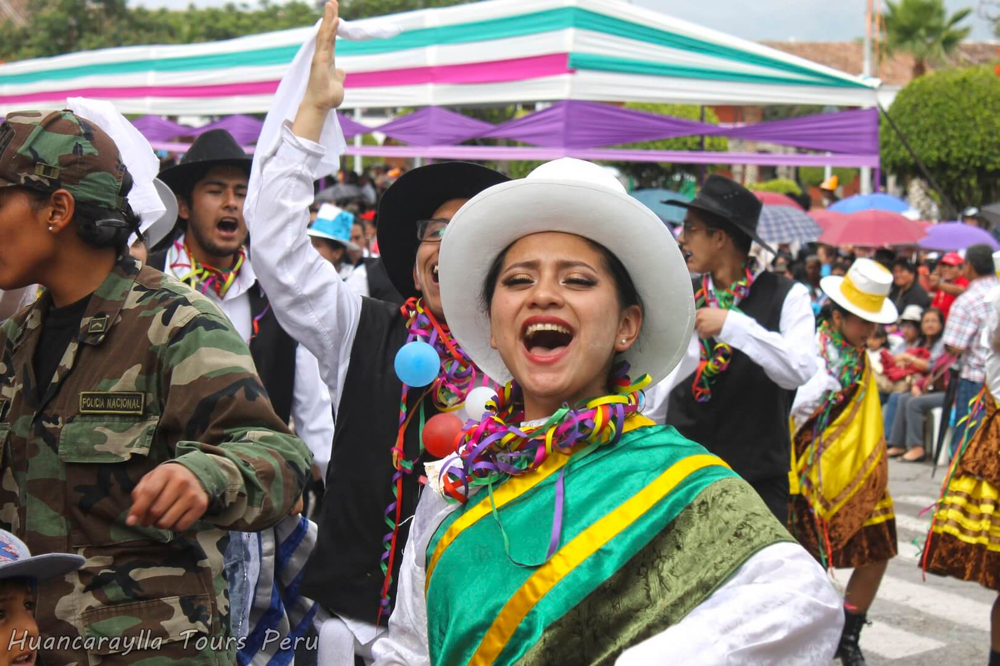
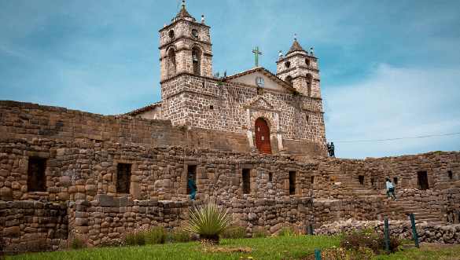
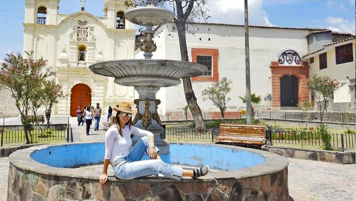

Dia Sabado: Tours a Wari y Pampa de Ayacucho – no Carnavalon


Duración: 5 Días / 4 Noches
Precios Desde S/ 605.00 (mínimo 2 pax)
Ayacucho donde se puede disfrutar del mejor carnaval del Perú por sus cánticos, música, bailes y su comida. Resalta por su música y danza carnavalesca, propia del folclore ayacuchano que encierra una tradición de carácter ritual expresando un tributo a la “Pachamama” por la maduración de las sementeras.
Ha sido declarado “Patrimonio Cultural de la Nación” y en él se expresan la creatividad y sensibilidad del pueblo ayacuchano a través de las comparsas, las canciones y testamento del “Ño Carnavalón”.
Aunque las actividades y el ambiente festivo ya se viven semanas antes, los días centrales van del 01 al 04 de marzo de 2025. Durante estos tres días tiene lugar el Paseo de Comparsas Tradicionales Ayacuchanas, un espectáculo que no puedes perderte. Este año participarán más de 100 comparsas con entre 100 a 200 danzantes, configuradas por los vecinos de los barrios aledaños. Llevan trajes vistosos que irradian majestuosidad, unas prendas multicolores que representan toda la región de Ayacucho
Dia Sabado: Tours a Wari y Pampa de Ayacucho – no Carnavalon
01 üïõ 9:20 am
Concentración Plaza de Armas AYACUCHO (Portal Constitución Nro 09, Frente extremo de la Catedral).
02 üïõ 9:30 am
Rumbo al Complejo Arqueológico de Wari, Capital del Primer Imperio Andino, donde se ingresa al Museo de Sitio, el Templo Mayor, Barrio o sectores de la cultura. Luego Visitaremos los talleres artesanales de Cerámica, Museo de Sitio, la casa de la Capitulación en el pueblo de Quinua, que se caracteriza por ser un pueblo Pintoresco y netamente Alfarero a un kilómetro del pueblo se encuentra, El Santuario Histórico de la Pampa de Ayacucho, donde se llevó a cabo la Batalla de Ayacucho por la independencia del Perú y de América.
03 üïõ 02:00
termina el tours.
04 üïõ 02:00
Tiene lugar uno de los actos más solemnes con el “Ingreso Triunfal del Ño Carnavalón” y el Paseo de Comparsas institucionales que recorren las calles del centro de la ciudad.
01 üïõ 9:20 am
Este Dia es el día central del Carnaval Ayacuchano con el Festival de Comparsas Rurales en toda la Región a primeras horas de la mañana, el Festival de Hatun Qasa, el Carnaval de Waswantu y el “Corso de Carros Alegóricos y Paseo de Comparsas Provinciales”.
Dia Domingo: Dia Central de Carnavales
Dia Lunes: Tours Vilcashuaman Intihuatana
01 üïõ 7:00 am
07:30 am Desayuno ofrecido por el Hotel.
02 üïõ 8:30 am
08:00 am Visita a las Puyas de Raymondi, visita al Complejo Arqueologico de Intihuatana (Laguna de pumaccocha, baño del inca), finalmente llegaremos a Vilcashuaman (Templo del Sol y la Luna, Ushno, Plaza de Pachacutec, Portada del Sol), que son sitios arqueológicos de los INCAS.
03 üïõ 08:00 pm
termina el tours.
01 üïõ 9:20 am
Inicio de City Tours Ayacucho.
02 üïõ 9:23 am
El tour comprende de la visita del 01 Museo (Hipólito Unanue, El museo la memoria ó Juaquin Lopez Antay), Monasterio de Santa Teresa de las Carmelitas Descalzas, taller Artesanal Barrio de Santa Ana, Mirador de Cerro Acuchimay para ver una vista panorámica de la ciudad, la Catedral y algunas casonas coloniales; Castilla y Zamora, Boza y Solís, Velarde Álvarez.
03 üïõ 1:00 pm
Fin del Tours.
Dia Martes: City Tours Ayacucho
Dia Miercoles Ceniza (Check Out 12:00 Pm)

01 üïõ 12:00 pm
Traslado al Aeropuerto o Terrapuerto.
Importante una vez hecho el depósito, enviar un correo a viveayacucho@hotmail.com.pe y/o viveayacucho@gmail.com con el asunto “Pikimachay- Huanta”, adjuntando una foto del voucher e indicando:

Realizar los depósitos en Agentes BCP, Yape, Plin o mediante transferencias bancarias.

Una vez hecho el depósito, podrá postergar su participación para otra fecha si lo informa con mínimo 7 días de anticipación.
De no asistir o llegar tarde el día del evento, se pierde el cupo y no se podrá pedir devolución ni canjearlo por otra salida
La movilidad tiene sólo 05 minutos de tolerancia de la hora indicada. Con la finalidad de cumplir el itinerario de nuestras salidas y por respeto a los participantes que llegan temprano, no podemos esperar más de los 05 minutos establecidos
Los tours de aventura están sujetos a cambios en el itinerario o incluso postergaciones (debidamente informadas), debido a factores que no sean controlables por la empresa ni los guías como: lluvias, carreteras en mal estado, huelgas y similares.